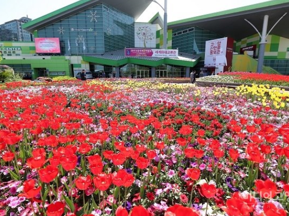
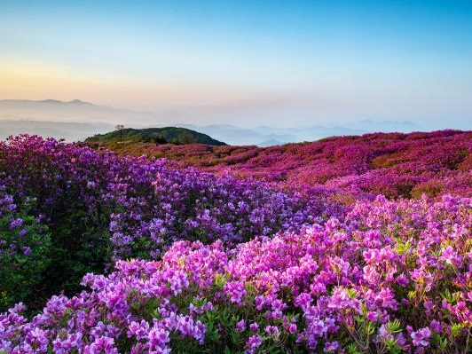
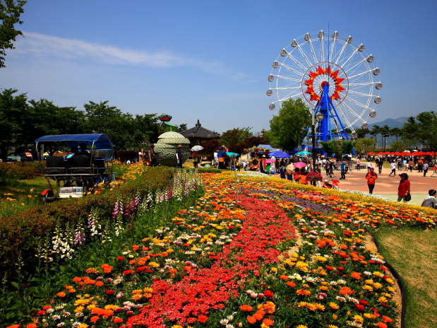

기간 2017.04.28(금)~2017.05.14(일)
장소 고양시 호수공원 일원
주최 고양시 · (재)고양국제꽃박람회
요금
성인 12,000원
특별할인(어린이,경로) 10,000원
야간(6시이후) 8,000원
30개국 300 여개의 화훼 관련 기관, 단체, 업체가 참가하여
각국의 화훼류와 화훼 전시하며 세계 화훼의 최신 트렌드를 제시한다.
또한 쉽게 볼 수 없는 희귀 식물 전시, 화훼 조형 예술로 꾸며지는 실내 정원,
다채로운 야외 테마 정원, 화훼 문화 체험 프로그램, 꽃꽂이 경진 대회 등 꽃 문화 행사,
풍성한 공연·이벤트, 농가가 직접 재배하여 판매하는 화훼 판매장 등을 만나볼 수 있다.
밤에는 꽃향기 머금은 불빛 정원, LED 퍼포먼스, K-POP공연 등 오감이 즐거운 꽃 문화 축제로
펼쳐진다.

기간 2017.04.30(일)~2017.05.14(일)
장소 가회면 황매산군립공원 일원
주최 황매산철쭉제전위원회
요금 (주차료)
경차1,500원 / 승용차3,000원
25인승 미만6,000원 / 25인승 10,000원
4월 30일부터 5월 14일까지 열리는 "황매산철쭉제"동안 황매산은
진분홍빛 철쭉(약 350,000㎡)으로 화려하게 뒤덮인다. 영남의 소(小)금강이라
불리는 황매산은 산 정상의 철쭉군락지까지 잘 정비된 도로로 접근이 편리하여
노부모를 동반한 가족산행 코스로 제격이다. 가족들과 함께 봄 나들이에 나선다면
꼭 추천하고 싶은 장소이다.
황매산(1108m)은 소백산과 바래봉에 이어 철쭉 3대 명산으로, 만물의 형태를 갖춘 모산재의
기암괴석과 북서쪽 능선의 정상을 휘돌아 산 아래 해발 800~900m 황매평전 목장지대로 이어진
전국 최대 규모의 철쭉군락지는 그야말로 하늘과 맞닿을 듯 드넓은 진분홍빛 산상화원으로,
보는 이들로 하여금 감탄을 자아내게 하는 자연 그대로의 신비함을 느낄 수 있다.

기간 2017.05.19(금)~2017.05.28(일)
장소 전남 곡성군 섬진강기차마을 장미공원
주최 곡성군
요금 2,000원 ~ 3,000원(섬진강 기차마을 입장료)
전남 곡성군은 '한국 관광 100선'에 선정된 곡성 섬진강기차마을에서
'2017 제7회 곡성세계장미축제'를 개최한다.
'곡성세계장미축제'는 오는 5월 19일부터 5월 28일까지 기차마을 1004 장미공원에서
‘향기(Scent), 사랑(Love), 꿈(Dream)'을 주제로 개최되며, 유럽 등 세계 여러 나라의
장미꽃을 준비하고 있다.
그와 더불어 아름다운 장미꽃 향기 가득한 장미공원에서 그에 어울리는
여러 행사를 준비 중이다.